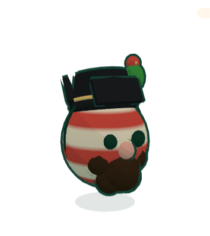
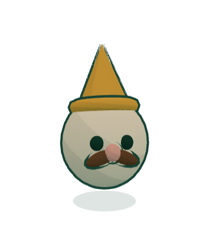

<!doctype html>
<html lang="en">
<head>
<meta charset="utf-8">
<meta name="viewport" content="width=device-width, initial-scale=1">
<title>Where the gnomes show · Gnogolf mockup</title>
<link rel="stylesheet" href="kit.css">
<!-- Four places the collection shows in the game, each a crop of its screen; the
     title screen is not one of them, on purpose. One state. -->
<style>
  body { background: #e9e2d2; padding: 26px; }
  .places { display: grid; grid-template-columns: 1fr 1fr; gap: 22px; max-width: 1390px; margin: 0 auto; }
  .place { display: grid; gap: 8px; align-content: start; }
  .place h2 { margin: 0; font-size: 17px; }
  .place p { margin: 0; font-size: 13px; line-height: 1.4; color: var(--ink-soft); max-width: 640px; }
  .crop { position: relative; height: 330px; overflow: hidden; border: var(--edge-bold); border-radius: 14px; background: var(--s0, #fff3df); }
  .crop.front { min-height: 0; padding: 22px; }
  /* (a crop of a front screen: its backdrop and frame inside the crop, not the window) */
  .crop.front::before { position: absolute; }
  .crop.front::after { position: absolute; inset: 8px; box-shadow: none; }

  /* 1. the cups' records row (Worlds.tsx), its links: a third one */
  .podium__head { display: flex; justify-content: space-between; align-items: baseline; font-size: 13px; font-weight: 700; margin: 6px 4px 8px; }
  .podium__head a { margin-left: 14px; color: var(--green); text-decoration: underline dashed; text-underline-offset: 3px; }
  .podium__head a.new { position: relative; }
  .stk-row { display: grid; grid-template-columns: repeat(3, 1fr); gap: 12px; }
  .stk-row .sticker { min-height: 70px; }
  .stk-row .sticker:nth-child(odd) { rotate: -1deg; } .stk-row .sticker:nth-child(even) { rotate: 1deg; }
  .face { width: 46px; height: 46px; border-radius: 50%; border: 2.5px solid var(--ink); overflow: hidden; background: var(--stage, #d3e8c8); grid-row: 1 / 3; }
  .face img { width: 100%; height: 100%; object-fit: cover; transform: scale(1.75) translateY(-6%); }
  /* a Legendary's player: its name in a gold pill after theirs, on every board */
  .lpill { display: inline-flex; align-items: center; gap: 3px; margin-left: 6px; padding: 0 7px; border: 1.5px solid var(--ink); border-radius: var(--pill); background: var(--gold-grad); font-size: 11px; font-weight: 800; vertical-align: 2px; }
  .lpill svg { width: 10px; height: 10px; fill: var(--paper); stroke: var(--ink); stroke-width: 2; }
  .cups-peek { display: grid; grid-template-columns: repeat(5, 1fr); gap: 12px; margin-top: 18px; }
  .cups-peek i { height: 120px; border: var(--edge-bold); border-radius: var(--r-panel) var(--r-panel) 0 0; border-bottom: 0; }

  /* 2. a rival's ghost on the green: their gnome, see-through, its name on a tag a tap away */
  .play { background: url(img/play-garden3.jpg) 30% 40% / 1440px auto; }
  .ghost { position: absolute; left: 470px; top: 120px; width: 120px; opacity: .55; filter: saturate(.7); }
  .me { position: absolute; left: 200px; top: 150px; width: 110px; }
  .ghost-tag { position: absolute; left: 430px; top: 92px; display: inline-flex; align-items: center; gap: 6px; padding: 3px 10px 3px 4px; border: var(--edge); border-radius: var(--pill); background: rgba(var(--paper-rgb), .92); font-size: 12.5px; font-weight: 700; box-shadow: 0 2px 0 var(--ink); }
  .ghost-tag .face { width: 24px; height: 24px; border-width: 2px; }
  .hud-duel { position: absolute; left: 14px; top: 14px; display: grid; gap: 2px; padding: 8px 14px; border: var(--info-edge); border-radius: 16px; background: var(--info-bg); font-size: 13px; }
  .hud-duel div { display: flex; gap: 8px; align-items: center; }
  .hud-duel .face { width: 22px; height: 22px; border-width: 2px; }
  .hud-duel b { margin-left: auto; font-size: 16px; }

  /* 3. the hole's finish card (Golf.tsx win card), its share: the card's gnome, another tried on */
  .win { position: absolute; left: 50%; top: 14px; transform: translateX(-50%); width: 420px; padding: 18px 22px; border: var(--edge); border-radius: var(--r-panel); background: var(--paper); box-shadow: var(--shadow); text-align: center; }
  .win h3 { margin: 2px 0 4px; font-size: 34px; color: var(--hat); line-height: 1; }
  .win .score { font-size: 64px; font-weight: 700; line-height: 1; }
  .tryon { display: flex; gap: 10px; align-items: center; justify-content: center; margin-top: 10px; padding: 8px; border: var(--rule); border-radius: 14px; }
  .tryon .face { width: 40px; height: 40px; }
  .tryon span { font-size: 13px; font-weight: 600; text-align: left; }

  /* 4. the boards (Leaderboard.tsx), a row: the player's gnome as their face */
  .lb { list-style: none; margin: 0; padding: 0; display: grid; gap: 8px; }
  .lb li { display: grid; grid-template-columns: 30px 40px 1fr auto 44px; gap: 10px; align-items: center; padding: 8px 12px; border: var(--edge); border-radius: 12px; background: var(--white); font-size: 15px; }
  .lb li.mine { background: var(--ink); color: var(--paper); }
  .lb .face { width: 38px; height: 38px; border-width: 2px; grid-row: auto; }
  .hud-duel .face, .ghost-tag .face, .tryon .face { grid-row: auto; }
  .medal { width: 26px; height: 26px; border-radius: 50%; border: 2px solid var(--ink); display: grid; place-items: center; font-size: 12px; font-weight: 800; }
  .lb .btn { min-height: 30px; padding: 2px 10px; font-size: 12px; }
</style>
</head>
<body>
<div class="places" id="app"></div>
<script src="kit.js"></script>
<script>
  const { TIER_ICON, shareRow } = Kit;
  const face = (img, stage = "#d3e8c8") => `<span class="face" style="background:${stage}"></span>`;
  const crown = `<span class="lpill">${TIER_ICON.legendary}The Windmill King</span>`;

  document.getElementById("app").innerHTML = `
    <section class="place"><h2>1 · The cups: a third link, beside Badges and All players</h2>
      <div class="crop front tint--garden">
        <div class="podium__head"><span>Records to beat <small style="font-weight:600;color:var(--ink-soft)">Pro · today</small></span><span><a>Badges 3/15 →</a><a>All players →</a><a class="new">Gnomes →</a></span></div>
        <div class="stk-row">
          <div class="sticker">${face("img/g12.png", "#ffd75e")}<span class="sticker__who">nym-itsok123 ${crown}</span><span class="sticker__sub">The Shelf · 4 strokes</span></div>
          <div class="sticker">${face("img/g02.png")}<span class="sticker__who">nym-zxxma042</span><span class="sticker__sub">Bumper Alley · 5 strokes</span></div>
          <div class="sticker">${face("img/g03.png")}<span class="sticker__who">nym-moustache943</span><span class="sticker__sub">Down the Tunnel · 1 stroke</span></div>
        </div>
        <div class="cups-peek"><i style="background:#1f9a6a"></i><i style="background:#1a86d0"></i><i style="background:#cf3f7c"></i><i style="background:#5569db"></i><i style="background:#4f3b8f"></i></div>
      </div>
      <p>A plain link, as the two beside it, and no badge counting what is for sale. A player's face on a sticker is the gnome their ghost wears; a Legendary's player carries its name in a gold pill on every board. While a wave is open, the link reads <b>Gnomes · Wave 1 →</b>; that is all the noise the cups make.</p>
    </section>

    <section class="place"><h2>2 · A duel: the rival's ghost wears their gnome</h2>
      <div class="crop play">
        
        
        <button class="ghost-tag">${face("img/g03.png")}nym-moustache943 · Thistle of the Garden</button>
        <div class="hud-duel"><div>${face("img/g08.png")}You<b>2</b></div><div>${face("img/g03.png")}nym-moustache943<b>3</b></div></div>
      </div>
      <p>The ghost is the rival's own gnome, see-through, meshes only (no trail, no holing). Its tag shows while the ghost rolls and on a tap; tapping the name opens that gnome's page in a sheet over the hole, never mid-shot. A rival whose gnome matches the player's own falls back to the game's rival look, so the two never read alike.</p>
    </section>

    <section class="place"><h2>3 · A hole finished: the share card tries on another gnome</h2>
      <div class="crop front tint--garden">
        <div class="win"><span class="eyebrow">In the hole! · Down the Tunnel</span><h3>Birdie!</h3><div class="score">1</div>
          <div style="margin-top:8px">${shareRow("Share")}</div>
          <div class="tryon">${face("img/g08.png")}<span>The card shows <b>The Pirate</b>.<br><button class="linkish">Try another gnome on it</button></span></div>
        </div>
      </div>
      <p>Only after a personal best, and only on the share card: the player's gnome is on it; "Try another gnome on it" previews the card with any gnome, theirs, earned or in the gallery, with a link to that gnome's page. Never after a bad shot, never a pop-up, never "your rival has a gnome you don't".</p>
    </section>

    <section class="place"><h2>4 · The boards: a player's face is their gnome</h2>
      <div class="crop front tint--garden">
        <ol class="lb">
          <li><span class="medal" style="background:var(--gold)">1</span>${face("img/g12.png", "#ffd75e")}<span><b>nym-itsok123</b> ${crown}</span><b>31</b><button class="btn btn--gold">Race</button></li>
          <li><span class="medal" style="background:var(--silver)">2</span>${face("img/g02.png")}<span><b>nym-zxxma042</b></span><b>33</b><button class="btn btn--gold">Race</button></li>
          <li><span class="medal" style="background:var(--bronze)">3</span>${face("img/g03.png")}<span><b>nym-moustache943</b></span><b>34</b><button class="btn btn--gold">Race</button></li>
          <li class="mine"><span class="medal" style="background:var(--paper);color:var(--ink)">7</span>${face("img/g08.png")}<span><b>You</b></span><b>38</b><span></span></li>
          <li><span class="medal" style="background:var(--paper)">8</span>${face("img/g00.png")}<span><b>nym-pebble77</b></span><b>39</b><button class="btn btn--gold">Race</button></li>
        </ol>
      </div>
      <p>The face stays the board's flat face until the gnome's thumbnail is loaded (one read per page of rows, cached for the visit). A gnome that changed hands drops off its old player's row at once: the chain says who wears what.</p>
    </section>`;
</script>
</body>
</html>
